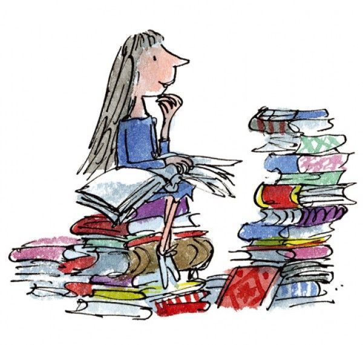

Roald Dahl was a spy, an ace fighter pilot, a chocolate historian and a medical inventor.
Roald Dahl
Born in Llandaff, Wales, on 13th September 1916 to Norwegian parents, Harald Dahl and Sofie Magdalene Hesselberg, Dahl was named after Roald Amundsen, the Norwegian who had been the first man to reach the South Pole just four years earlier. A heroic start in life. But his early years were blighted by the tragic deaths of his older sister, Astri, and his father.
Wanting the best for her only son, his mother sent him to boarding school - first to St Peter's, Weston-super-Mare; then, in 1929, to Repton - where many bizarre and memorable events would later be recounted in Boy. Pupils at Repton were invited to trial chocolate bars, a memory that stayed with Dahl throughout his life, inspiring Charlie and the Chocolate Factory.
Schooldays happily behind him, Dahl’s lust for travel took him first to Canada, then to East Africa, where he worked for an oil company until the outbreak of World War Two. He enlisted in the Royal Air Force at 23 years old.
There followed a burst of literary energy: in 1961 James and the Giant Peach was published in the US, followed by Charlie and the Chocolate Factory. Roald then wrote screenplays for the James Bond hit You Only Live Twice and Chitty Chitty Bang Bang, as well as adult novels such as Kiss Kiss. Fantastic Mr. Fox was published in 1970, the year before the film Willy Wonka and the Chocolate Factory was released. The rest of the decade saw the publication of many other classics, including Danny the Champion of the World, The Enormous Crocodile, and My Uncle Oswald.
In the early 1980s he published The Twits, Revolting Rhymes, The BFG and The Witches. There followed two autobiographical books: Boy, in 1984 and Going Solo, in 1986. Matilda was published in 1988, Esio Trot in 1990, and finally, in 1991, came the posthumous delight of The Minpins.
BACKGROUND
Matilda Wormwood is only five years old, but she is a genius. Unfortunately her parents are too stupid to even notice. Worse, her horrible headmistress Miss Trunchbull is a bully who makes life difficult for Matilda's teacher, Miss Honey, and her friends. But what Miss Trunchbull doesn't know is that Matilda has a trick or two up her sleeve...
Matilda won the Children's Book Award shortly after it was published in 1988, and it has continued to delight audiences ever since. Early drafts of the story were very different to the one we now know. At first, Matilda was a wicked girl who eventually used her powers to help her teacher solve her financial problems - by fixing a horse race. In the end, though, it became the magical story now known to children the world over.
In 1996 a film version of Matilda was released. Directed by Danny DeVito - who also starred as Mr Wormwood, alongside Mara Wilson as Matilda and Pam Ferris as Miss Trunchbull - the film went on to become a cult classic.
In 2010, The Royal Shakespeare Company’s production of Matilda The Musical, written by Dennis Kelly and with music and lyrics by Tim Minchin, opened in Stratford-upon-Avon, UK, to great critical acclaim. The production transferred to London's West End a year later, and in spring 2013 the show opened on Broadway.
Matilda was Roald Dahl's last long children's book.
MEET THE CHARACTERS
MATILDA WORMWOOD
Matilda Wormwood is the clever, brave, book-loving girl who gives her name to one of Roald Dahl's last published stories: Matilda.
So clever is Matilda that by the age of four, she has read all the children's books in her local library. By the time she begins school aged five she has graduated to Charles Dickens and Rudyard Kipling. What's more, she can multiply large numbers with no trouble and can compose and recite limericks with barely a breath. Her schoolteacher Miss Honey thinks she's a genius.

Matilda Wormwood
Unfortunately, her parents aren't so impressed. Mr and Mrs Wormwood completely fail to appreciate her incredible abilities - but luckily for Matilda, this also means they never fail to fall for her tricks...
Because as well as being very clever, Matilda is no stranger to a spot of mischief. From supergluing hats to hiding a parrot up a chimney, she makes her hapless parents pay for their indifference and stupidity in a number of subtle ways.
It's headmistress Miss Trunchbull she saves her greatest trick for, though...
Matilda ultimately uses her incredible powers to help Miss Honey, but in earlier drafts of the story she was actually a "wicked" girl who terrorised her parents and teachers. Roald soon realised this wasn't right, though, and the Matilda we all know and love first appeared in print in 1988.
Since its first publication, Matilda has been adapted into a cult 1996 film, with Mara Wilson playing Miss Wormwood. And in 2010, the Royal Shakespeare Company's musical adaptation of the book with music and lyrics by Tim Minchin opened at Stratford-upon-Avon. A phenomenal success, the musical went on to open in London's West End the following year, on Broadway in 2013, and is set to take Australia by storm in 2015.
As Matilda herself sings in the musical adaptation - "sometimes you have to be a little bit naughty."
MISS HONEY
"Miss Jennifer Honey was a mild and quiet person who never raised her voice and was seldom seen to smile, but there is no doubt she possessed that rare gift for being adored by every small child under her care."
Miss Honey is Matilda Wormwood's class teacher at Crunchem Hall Primary School. Aside from librarian Mrs Phelps, she is the first person to fully appreciate Matilda's incredible abilities and tries to bring them to the attention of the school's formidable headteacher Miss Trunchbull and Matilda's uninterested parents.
Ms.Jennfier Honey
Undeterred by their reactions, Miss Honey does all she can to encourage Matilda. In doing so, the pair become firm friends and it's Miss Honey's own story that leads Matilda to an incredible discovery about the true power of her brain...
Matilda was published in 1988. The story was adapted for cinema in 1996, starring Embeth Davidtz as Miss Honey. In 2010, the RSC's musical adaptation of the story opened in Stratford-upon-Avon. The show, which was written by Dennis Kelly and Tim Minchin, went on to open in London's West End, on Broadway and in Australia.
HEADMISTRESS TRUNCHBULL
"Looking at her, you got the feeling that this was someone who could bend iron bars and tear telephone directories in half."
Miss Trunchbull is the "formidable female" headmistress of Crunchem Hall Primary School, attended by Matilda Wormwood and her friends. A former Olympic hammer-thrower with a hatred of children, Roald Dahl describes her as "a gigantic holy terror, a fierce tyrranical monster who frightened the life out of pupils and teachers alike."
She's certainly not the sort of woman you'd expect to find as headmistress of a school. Her behaviour to her pupils - from force-feeding them cake to throwing them across the playground by their pigtails - is outrageous. According to Matilda, it's for this very reason that she gets away with it. "No parent is going to believe this pigtail story, not in a million years," she tells her friend Lavender.
The Trunchbull is certainly not afraid of going the whole hog. And it's not just her pupils that suffer - Miss Honey also has to deal with the outrageous demands of this bullying headmistress. With a little help from Matilda, though, Miss Trunchbull does get her comeuppance...
In 1996, a film version of Matilda was released, with Pam Ferris playing Miss Trunchbull. In the RSC's musical adaptation of the story, the Trunchbull is played by a man. Actor Bertie Carvel originated the role both in London and on Broadway.
LAVENDER
"Lavender was exceptionally small for her age, a skinny little nymph with deep-brown eyes and with dark hair that was cut in a fringe across her forehead."
Lavender
Lavender is Matilda Wormwood's best friend. Described as "gutsy and adventurous," she is just as enthralled by Hortensia's Trunchbull horror stories as Matilda, and later on she devises her own way to cause that terrible headmistress of theirs a few troubles. It involves a glass of water and a slippery creature...
BRUCE BOGTROTTER
"An eleven-year-old boy who was decidedly large and round stood up and waddled briskly forward. He climbed up onto the platform."
Bruce Bogtrotter
Bruce Bogtrotter is the criminal-turned-chocolate-cake-conquering hero of Roald Dahl's Matilda. He attends the same school as Matilda - Crunchem Hall. In the original story, he is six years older than her, although in the RSC's Matilda The Musical they are nearer the same age.
Bruce's crime is to eat a slice of horrible headmistress Miss Trunchbull's chocolate cake. He thinks he's got away with it, but the Trunchbull is not one to take such insolence lightly. She devises a very particular punishment for this slightly greedy young boy - and the whole school are invited to watch...
MR. WORMWOOD
"Mr Wormwood was a small ratty-looking man whose front teeth stuck out underneath a thin ratty moustache. He liked to wear jackets with brightly coloured checks and he sported ties that were usually yellow or pale green."
Mr Wormwood - husband to Mrs Wormwood and father of Michael and Matilda - is a second-hand car salesman who likes to swindle his customers. "Sawdust," he tells his family, "is one of the great secrets of my success."
Mr.Wormwood
He's also a boastful, arrogant man who is utterly disinterested in his daughter, despite the fact that, by the age of four, she is reading Dickens and doing sums in her head that baffle him. He doesn't undersand her love of reading. "What d'you want a flaming book for?" he demands, when Matilda asks him.
Matilda gets her own back, though. The tricks she plays on her parents are ingenious - and teach Mr Wormwood to be a lot more careful about where he leaves his hat...
Matilda was adapted for the screen in 1996, with Danny DeVito playing the role of Harry Wormwood. The RSC's 2010 Matilda The Musical, featuring words and music by Tim Minchin and book by Dennis Kelly, includes a solo piece by Mr Wormwood all about his main love: telly.
MRS.WORMWOOD
Mrs.Wormwood
"A girl should think about making herself attractive so she can get a good husband later on. Looks is more important than books."
Mrs Wormwood is the neglectful mother of Matilda and her brother Michael. She's more interested in her TV programmes and playing bingo as often as she can to notice that her daughter is bordering on genius. When Matilda's teacher, Miss Honey, comes to tell her parents that she thinks Matilda could be brought up to university standard, Mrs Wormwood declares that looks are more important.
In the 1996 film adaptation of Matilda, Mrs Wormwood was played by Rhea Perlman. In the RSC's musical adaptation of the story, Mrs Wormwood's obsession is dancing as opposed to bingo, but she's equally as neglectful and obnoxious.
AMANDA THRIPP
Amanda Thripp
'That idiot Amanda,' Hortensia said, 'has let her long hair grow even longer during the hols and her mother has plaited it into pigtails. Silly thing to do.''
If there is one thing Miss Trunchbull - headmistress of Crunchem Hall - can't stand, it's pigtails.
As Hortensia implies to Matilda and Lavender, Amanda Thripp should know this. But her mummy likes pigtails, so Amanda allows her to plait them. It's not Amanda's mother that has to face the wrath of the Olympic standard hammer-throwing pigtail-hating headmistress though... Poor old Amanda.
HORTENSIA
Hortensia
'The Chokey,' Hortensia went on, 'is a very tall but very narrow cupboard. The floor is only ten inches square so you can't sit down or squat in it. You have to stand.'
Hortensia is the battle-hardened ten-year-old who teaches Matilda Wormwood and her friend Lavender what their headmistress, Miss Trunchbull, is really about. "Welcome to borstal," she says to them in the Crunchem Hall playground.
Hortensia is well versed in the art of Trunchbull-baiting - or at least, that's what she tells Matilda and Lavender. After explaining what The Chokey is, she goes on to tell them about the many times she's found herself imprisoned inside it. Like after the time she poured Golden Syrup onto the Trunchbull's chair. Or the time she put itching powder in her gym knickers.
Matilda and Lavender are "enthralled" by Hortensia. "It's like a war," Matilda says, after hearing her tales of life at Crunchem.